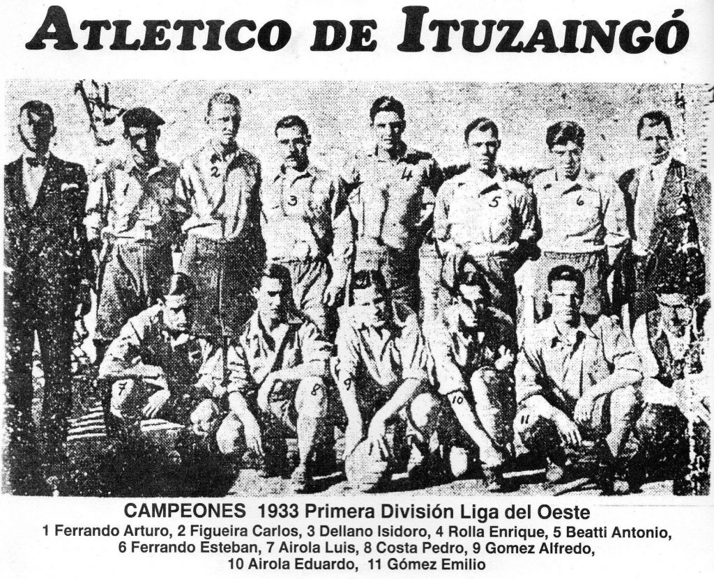

Historia
Ituzaingó fue fundado sobre la base de reuniones en 1911‑12, y adoptó los colores verde/blanco inspirados por el ramal del ferrocarril local
Situacion Actual
Institucionalmente, el club tiene una estructura que busca conectar fútbol profesional con formación juvenil: cuentan con Dirección Institucional de Fútbol bajo la conducción de Diego Ayoroa, que selecciona cuerpo técnico, jugadores y define modelo de juego